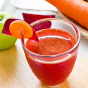
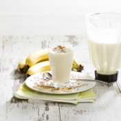
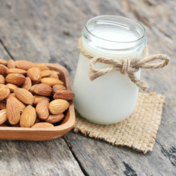

1.SOK OD CVEKLE SA SARGAREPOM I DJUMBIROM:
Sastojci:
1 manja cvekla
2 velike šargarepe
1 jabuka
1 struk celera
đumbir
Priprema recepta
Isperite sastojke u vodi i očistite ih. Iseckajte povrće na manje komade kako
bi mogli stati u sokovnik. Iscedite sok i servirajte. Savet: Zeleni vrhovi cvekle su
takođe jestivi i bogati su beta-karotenom,
pa se i oni mogu staviti u sokovnik u manjim količinama.

2.Proteinski šejk sa bananom i puterom od kikirikija
Sastojci
1 sveža ili smrznuta banana
2 supene kašike putera od kikirikija (ili nekog drugog biljnog putera)
1 šolja mleka od soje ili badema
1 kašičica proteinskog praha (graška, golice, kinoe...)
malo rendanog muskatnog oraščića po želji
Priprema recepta
Sve sastojke stavite u blender i miksajte tridesetak sekundi. Odmah servirajte.

3.BADEMOVO MLEKO
Sastojci
100g badema
1-2 urme
1l vode
Ekstrakt vanile
Priprema recepta
100g badema potopite uveče.
Ujutru vodu prospite, isperite bademe, dodajte 200ml vode,
jednu do dve urme bez koštice i izmiksajte u blenderu.
Zatim dodajte još 800ml vode. Nakon toga mleko procedite i
dodajte malo soli i po želji tečni ekstrakt vanile.
Ukoliko niste u prilici da nabavite vrećice za biljna mleka, procedite dobijenu tečnost kroz gazu.
Jednostavniji način je da upotrebite cediljku, ali u tom slučaju će ostati nešto više taloga.
Ovo mleko možete koristiti kao zamenu za kravlje, a pulpu koja je ostala nakon ceđenja iskoristite
za kolače ili kao dodatak jutarnjim pahuljicama.
Napitak se može čuvati u frižideru 3 dana.
